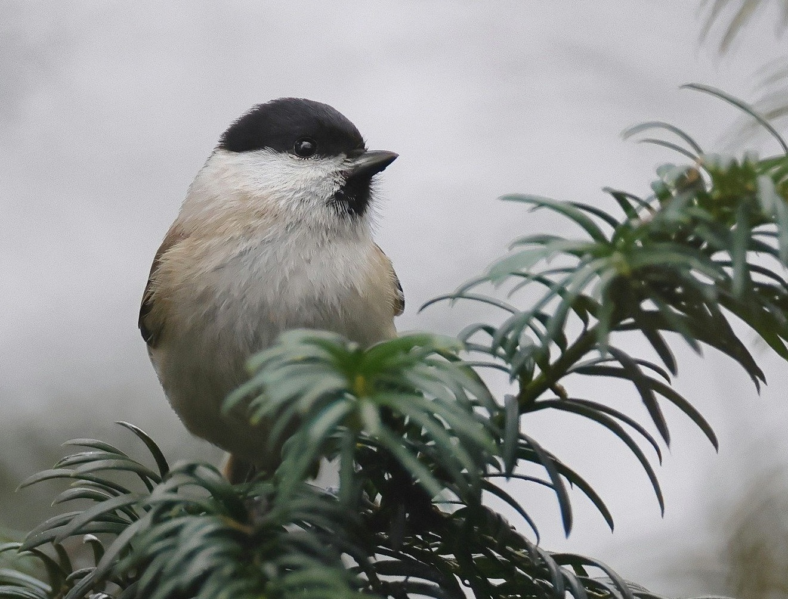

Life on a mountain lake
Canada is known for its stunning natural beauty, and one of its most breathtaking sights is the mountain lake. Nestled amidst towering peaks and pristine forests, these lakes offer a serene escape from the hustle and bustle of daily life.
One of the most picturesque mountain lakes in Canada is Lake Louise, located in Banff National Park in Alberta. With its crystal-clear turquoise waters and surrounding snow-capped mountains, it's no wonder that this lake is a popular destination for tourists and locals alike. Visitors can take a leisurely stroll around the lake or go for a more challenging hike up to one of the nearby peaks for a stunning panoramic view.
Another must-see mountain lake in Canada is Moraine Lake, also located in Banff National Park. Surrounded by the rugged peaks of the Canadian Rockies, this lake is famous for its vibrant blue-green color and stunning reflections. Visitors can hike around the lake or rent a canoe to paddle across its tranquil waters.
Further west in British Columbia, visitors can explore the glacial-fed Peyto Lake, located in Banff National Park's neighbor, Jasper National Park. This lake is known for its bright blue color, which is caused by rock flour that is carried into the lake by glacial meltwater. Visitors can hike to a viewpoint above the lake for a bird's eye view of this spectacular natural wonder.
No matter which mountain lake you choose to visit in Canada, you're sure to be awed by the beauty and majesty of nature. These pristine bodies of water are a testament to the power and resilience of the natural world, and they offer a serene and unforgettable escape for all who visit them.